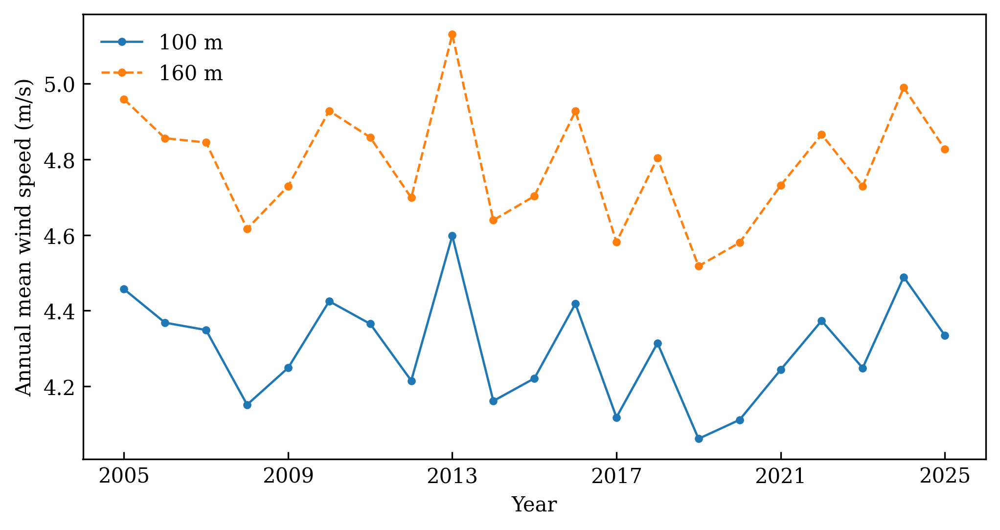
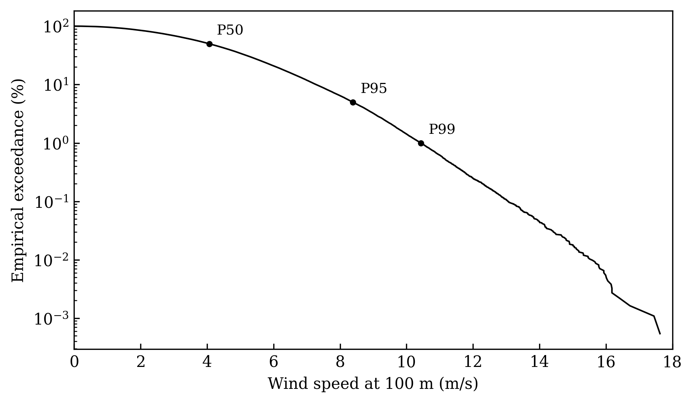
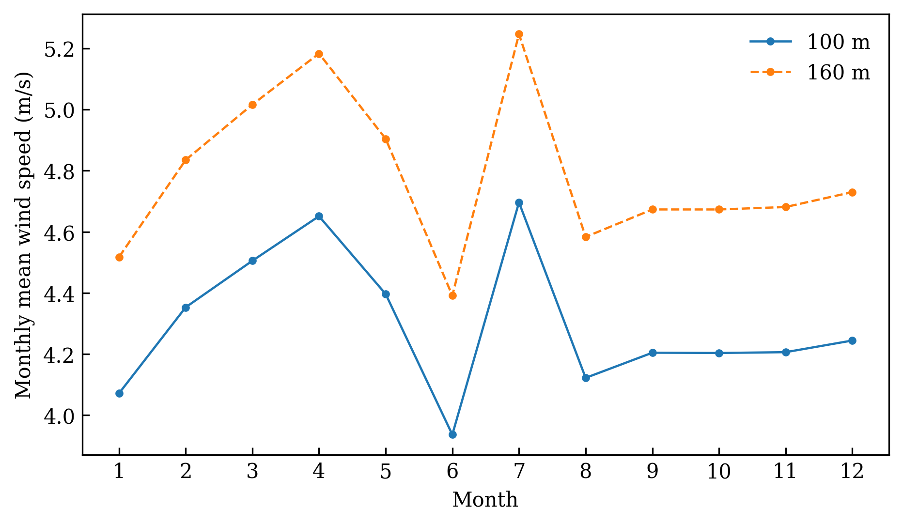
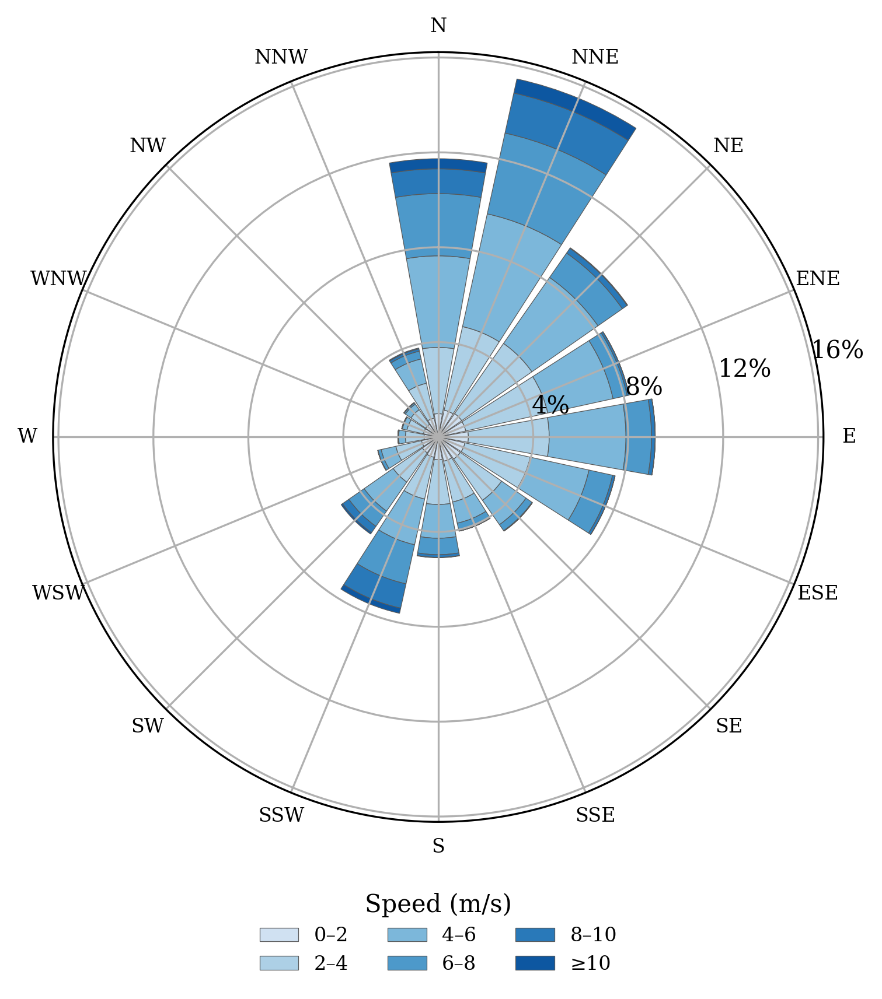
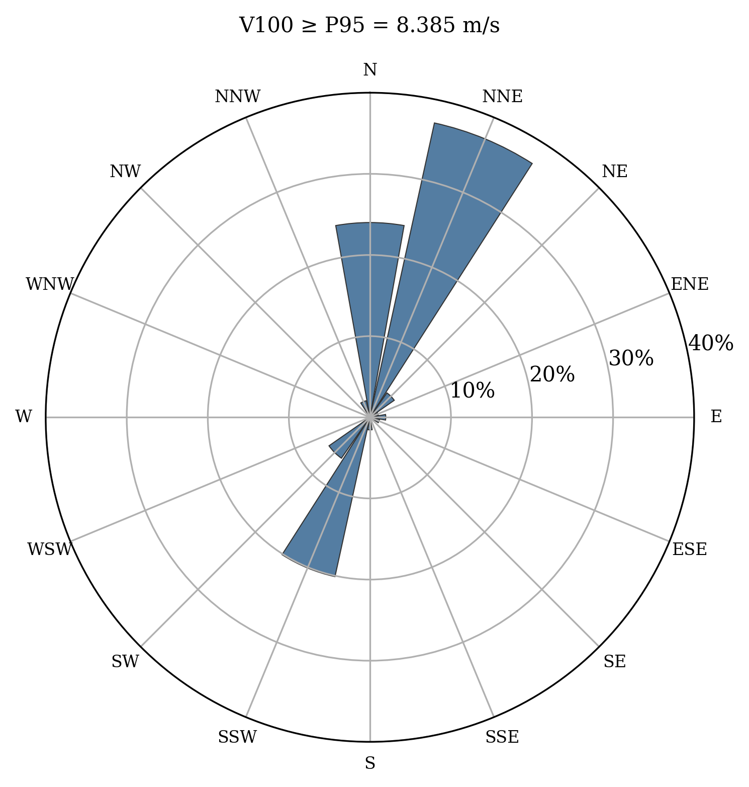
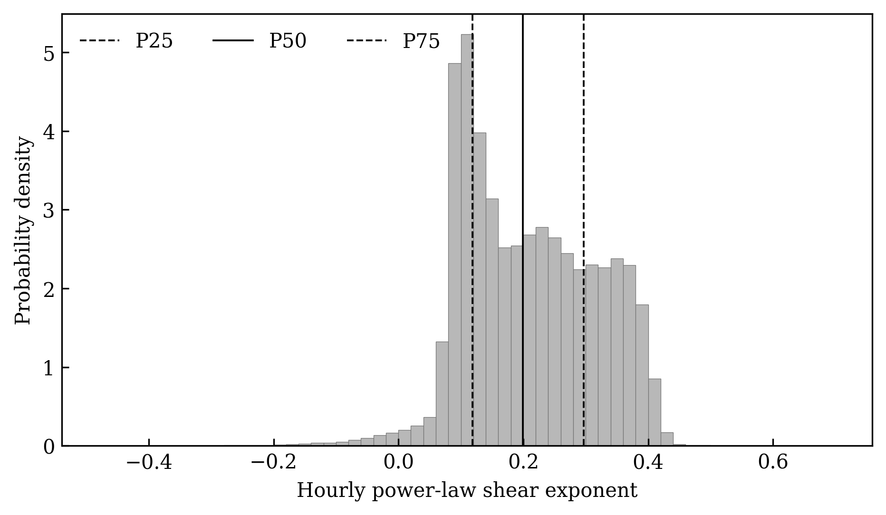
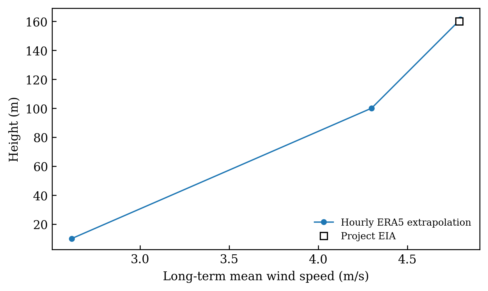
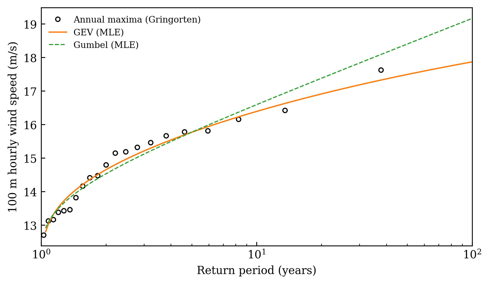

第三章 ERA5 原始数据复算图件
84季度、168个NetCDF文件、184080逐小时样本。参考原图对照尚未完成。
复算收据与哈希 · 逐小时序列 · 地震对照图

图3-1(a) 2005—2025年ERA5年平均风速变化SVG · PDF · PNG
图3-1(b) 2005—2025年ERA5 100 m逐小时风速经验超越曲线SVG · PDF · PNG
图3-2 2005—2025年ERA5月平均风速气候态SVG · PDF · PNG
图3-3(a) 2005—2025年ERA5 100 m风速—风向联合频率玫瑰图SVG · PDF · PNG
图3-3(b) ERA5高风样本（V100≥P95=8.385 m/s）方向玫瑰图SVG · PDF · PNG
图3-4(a) ERA5 10—100 m逐时风切变指数分布SVG · PDF · PNG
图3-4(b) 160 m风速外推与项目公开值交叉核查SVG · PDF · PNG
图3-5 ERA5年最大风速GEV返回水平敏感性SVG · PDF · PNG